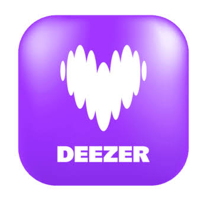

Comparing Major Music Streaming Services
Although leading audio services offer instant access to tens of millions of songs, they differ substantially in Croatian market availability, subscription pricing in euros, maximum audio fidelity, and special features. The table below compares six major platforms across key technical and commercial criteria.
| Platform | Availability in Croatia | Free Tier | Monthly & Student Price (EUR) | Maximum Audio Quality | Catalog Size | Stand-Out Features |
|---|---|---|---|---|---|---|
| Spotify | Yes (available since July 2020) | Yes (ad-supported) | Individual: €6.99/mo Student: €3.99/mo |
Lossy up to 320 kbps (Ogg Vorbis / AAC) | 100+ million tracks + podcasts & audiobooks | Algorithmic playlists (Discover Weekly, Daylist), synced lyrics, Blend, and live concert listings |
| Apple Music | Yes | No (free trial only) | Individual: ~€7.99/mo Student: ~€4.99/mo (includes Apple TV) |
Hi-Res Lossless ALAC (up to 24-bit/192 kHz) + Spatial Audio | 100+ million tracks | Dolby Atmos Spatial Audio, time-synced lyrics with Sing mode, human-curated radio, and Apple ecosystem integration |
| YouTube Music | Yes | Yes (ad-supported) | Individual: ~€7.99–€8.90/mo (bundled with YouTube Premium via local offers) | Lossy up to 256 kbps (AAC / Opus) | 100+ million official tracks + live videos, remixes & covers | Seamless audio/video switching, deep catalog of unofficial live sets and remixes, and YouTube Premium bundle option |
| Deezer | Yes (also discounted via Hrvatski Telekom) | Limited / regional | Individual: €11.99/mo (€5.18/mo via HT) Student: €5.99/mo |
Lossless FLAC (16-bit/44.1 kHz) | 120+ million tracks | Flow endless personalized mix, built-in SongCatcher audio recognition, synced lyrics, and music quizzes |
| Tidal | Yes | No (free trial only) | Individual: €12.99/mo Student: €5.49/mo |
Hi-Res Lossless FLAC (up to 24-bit/192 kHz) + Dolby Atmos | 110+ million tracks | Audiophile master quality, detailed songwriter/producer credits, live DJ sessions, and artist-focused royalty payouts |
| SoundCloud | Yes | Yes (ad-supported) | SoundCloud Go: €5.99/mo SoundCloud Go+: €9.99/mo |
Lossy up to 256 kbps AAC (Go+) | 375+ million user & artist uploads | Direct independent artist uploads, DJ sets, underground remixes, and Fan-Powered (user-centric) royalties |
Which Streaming Service Fits Which Listener?
- Spotify: Fits everyday listeners who want convenience, algorithmic playlists, and music tailored to daily activities, routines, or moods across devices, as well as social sharers. It also suits budget-conscious listeners who use the ad-supported free tier—though from a media-economics perspective, that free access sits inside a broader platform model driven by scale, programmatic advertising, and behavioral/contextual data targeting, bringing trade-offs such as repetitive or mismatched ads and ongoing debates around user profiling and data privacy.
- Apple Music: Best suited for audiophiles and Apple-ecosystem users who prioritize Spatial Audio with Dolby Atmos, lossless and hi-res playback, curated editorial programming, and tight integration across iPhone, Mac, and HomePod devices.
- YouTube Music: Ideal for listeners whose habits revolve around live performances, unofficial remixes, covers, and switching seamlessly between audio tracks and music videos, or those who already use YouTube heavily.
-

Deezer: Appeals to listeners looking for continuous personalized streams like Flow, song-recognition tools, time-synced lyrics, and lossless audio across multiple devices. - Tidal: Geared toward high-fidelity listeners who care about lossless and hi-res sound quality, detailed production and artist credits, and curated audio experiences.
- SoundCloud: Best for independent artists, bedroom producers, electronic fans, and discovery-driven listeners hunting for underground tracks, DJ sets, remixes, and early demos.